Estadística
Gráficas
Las gráficas estadísticas nos dan una información inmediata. Estas son las principales y los tipos de variables recomendados para cada una:
DIAGRAMA DE SECTORES: recomendado para variables cualitativas. La fórmula del ángulo central es:
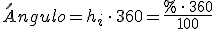
Ejemplo. Preguntamos a los 20 estudiantes de una clase sobre su mascota preferida :
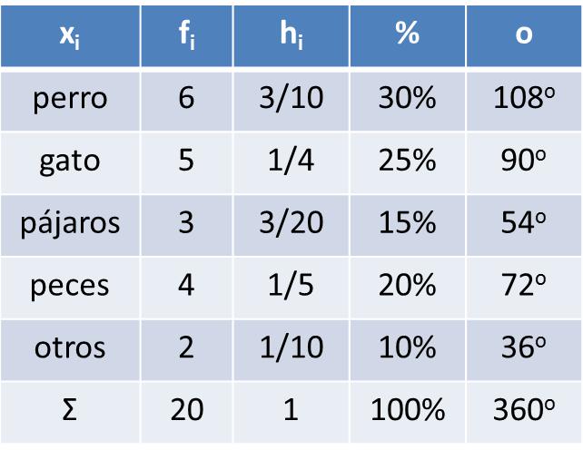 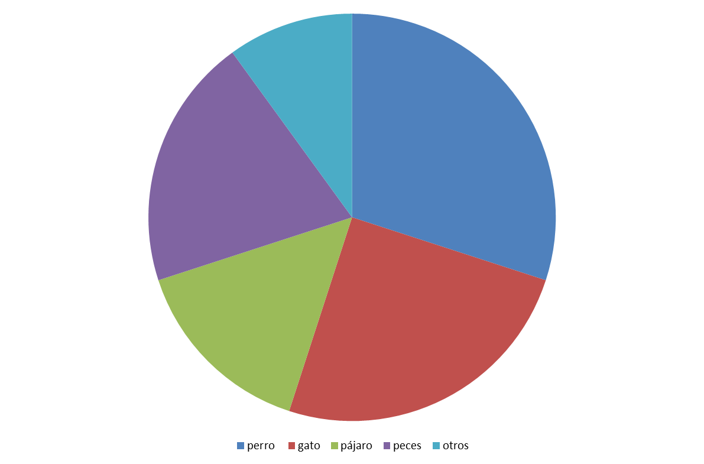
DIAGRAMA DE BARRAS: recomendado para variables cuantitativas discretas (sin agrupar).
Ejemplo. Preguntamos a 20 familias sobre el número de hijos:
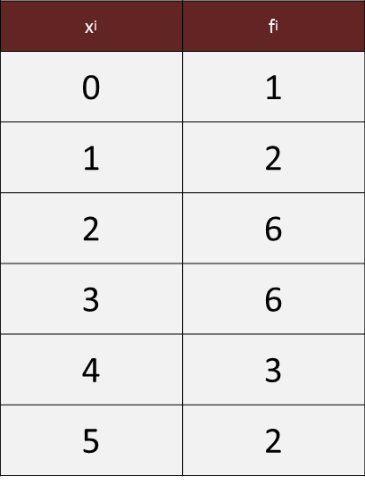 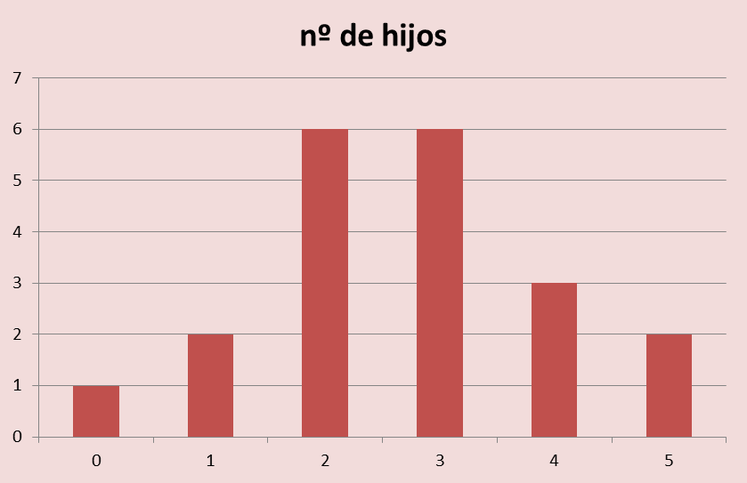
HISTOGRAMA Y POLÍGONO DE FRECUENCIAS: recomendado para variables cuantitativas continuas y con datos agrupados.
Ejemplo: Mario recogió datos sobre la altura de sus compañeros de clase:
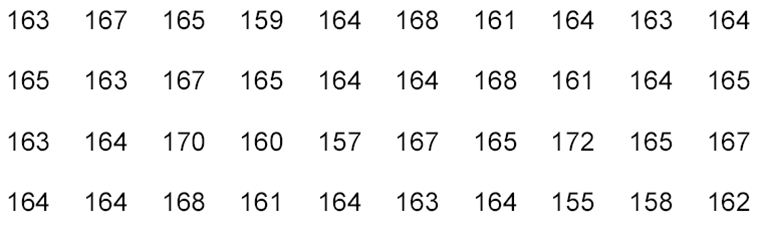
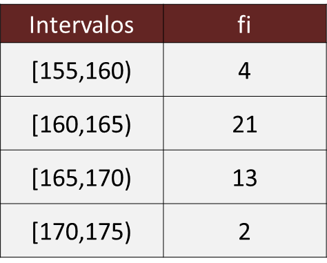 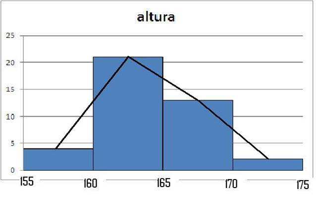
PIRÁMIDES DE POBLACIÓN, CLIMOGRAMAS,…
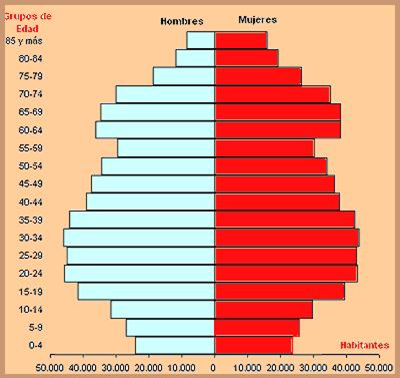 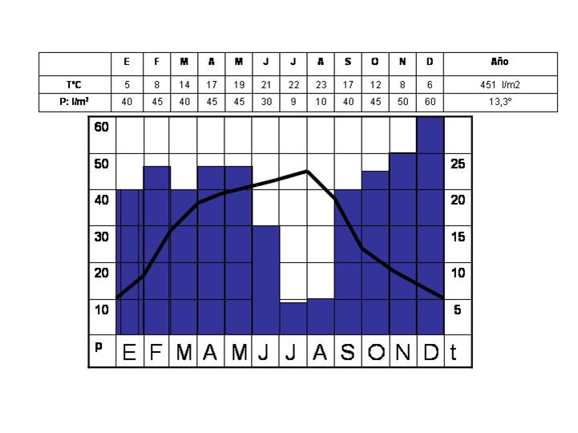
Ejercicios
1.- Representa las gráficas de los ejemplos de tabla y de tabla con datos agrupados
2.- Preguntamos a 50 personas su color favorito, y estas fueron sus respuestas
| xi | fi |
| rojo | 10 |
| verde | 15 |
| azul | 15 |
| rosa | 7 |
| otros | 3 |
Representa los datos
Soluciones:
1.- 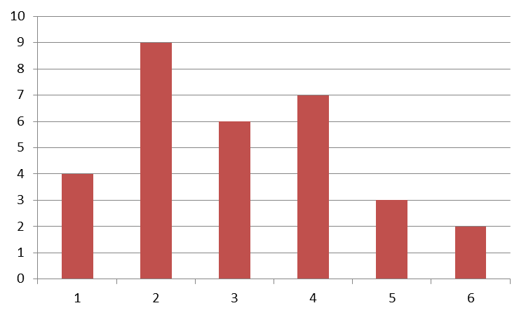 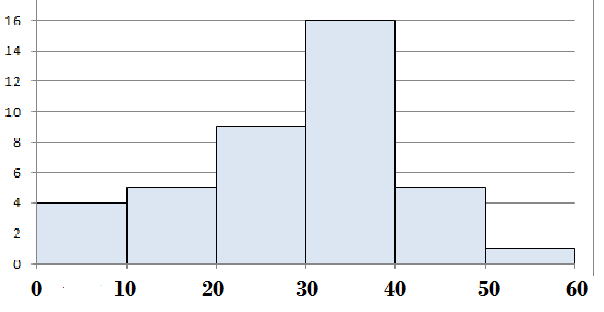
2.- 
Obra publicada con Licencia Creative Commons Reconocimiento No comercial Compartir igual 4.0